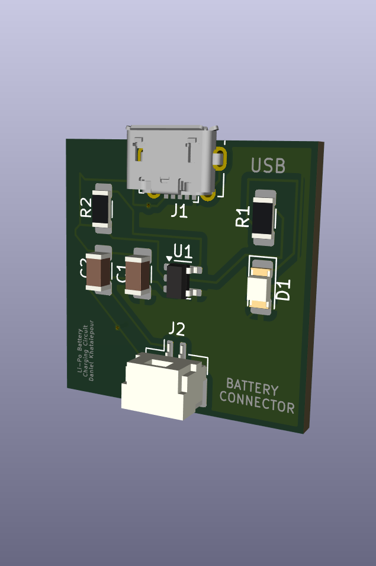
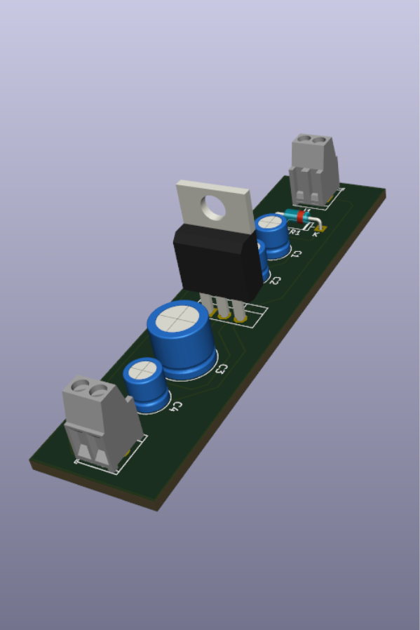

My Projects
STM32 FLIGHT CONTROLLER PCB
Designed and fabricated a custom flight controller in KiCad featuring the STM32F446RE microcontroller with ICM-42670P IMU and BMP390 barometric sensor. Implemented UART, SPI, CAN, SWD debugging, and ESC interfaces, with firmware development and testing in STM32CubeIDE.
Developed in KiCad & STM32CubeIDE

